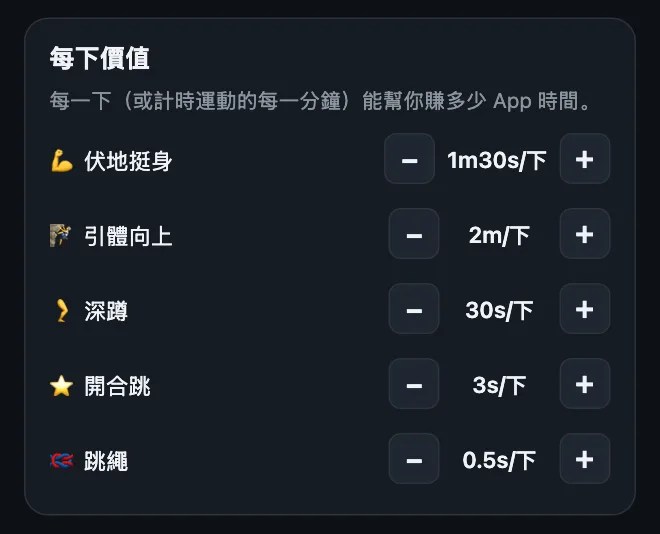

一下伏地挺身該換多少螢幕使用時間？
嗨大家好！在 HonorFit 裡，你記錄的每一下都能換 App 時間，而價格由你決定。這也是大家設定完之後最常問我的問題：一下伏地挺身該值多少？一分鐘？十秒？下面是我的想法。
預設值
如果你什麼都不動，就是這樣：
| 運動項目 | 預設可賺 |
|---|---|
| 💪 伏地挺身 | 每一下 1 分鐘 |
| 🧗 引體向上 | 每一下 1 分 30 秒 |
| 🔥 仰臥起坐、🦵 深蹲 | 每一下 30 秒 |
| 你自己新增的任何運動 | 每一下 30 秒 |
| 計時運動（走路、瑜伽、HIIT） | 每分鐘 30 秒 |
| 距離運動 | 每公里 5 分鐘，或每英里 8 分鐘 |
| 👟 步數 | 每 1,000 步 3 分鐘 |
所以 20 下伏地挺身就是 20 分鐘的 IG。對很多人來說，一開始這樣差不多剛好。但對有些人來說太大方，對有些人又太小氣。你是哪一種？
一行就能算出來
想兩個數字：
- 在一般的日子裡，花多少時間在被封鎖的 App 上你覺得 OK？要誠實，不是理想中的數字。
- 為了這些時間，你實際上願意做幾下，分散在一整天？
然後相除：每下價值 = 時間 ÷ 次數。想用 60 下伏地挺身換一小時 TikTok？那就是每一下 1 分鐘。一樣想要一小時，但你做得了 120 下深蹲？那就是每下深蹲 30 秒。真的就這麼簡單。
如果第 2 題的答案是「沒幾下」，那也沒關係。把每一下的價格訂高一點，再用每日基本額度（在「設定」裡，免費）讓每天一開始就已經有一些時間存著。
幾組可以直接照抄的設定
| 運動項目 | 每一下可賺 | 一組可以換到 |
|---|---|---|
| 伏地挺身（新手） | 1 分 30 秒 | 10 下伏地挺身 = 15 分鐘 |
| 伏地挺身（已經練一陣子了） | 30 秒 | 40 下伏地挺身 = 20 分鐘 |
| 開合跳 | 3 秒 | 100 下開合跳 = 5 分鐘 |
| 跳繩（每跳一下） | 0.5 秒 | 跳 600 下 = 5 分鐘 |
| 引體向上 | 2 分鐘 | 5 下引體向上 = 10 分鐘 |
| 跑步（距離） | 每公里 6 分鐘 | 跑 5 公里 = 30 分鐘 |
規律是：一下越簡單、越快，價值就應該越低。一下開合跳大概只要一秒，所以不該跟一下引體向上換到一樣多。
1.18.0 的加減按鈕變得更細了
之前最小值是 5 秒，所以超快的動作（跳繩、開合跳）很難定價，而從 3 分鐘調到 10 分鐘又要按到天荒地老。有位使用者寫信來講了這兩件事，所以在 1.18.0，−/+ 按鈕會照一個更聰明的階梯來跳：
- 5 秒以下：4、3、2、1 秒，然後是 0.5、0.25 和 0.1 秒。
- 5 秒到 1 分鐘：每次 5 秒。
- 1 到 3 分鐘：每次 15 秒。
- 3 到 10 分鐘：每次 30 秒。
- 10 分鐘以上：每次 1 分鐘。
你可以在兩個地方找到它們：
- 設定 → 每下價值：每個運動項目一排 −/+。如果只是想微調價格，這裡最快。
- 設定 → 運動項目 → 編輯：完整的編輯畫面，你也可以在這裡新增、改名和刪除運動項目，並在次數、分鐘和距離之間切換。完整說明在HonorFit 怎麼自訂運動項目這篇裡。

價格設錯的徵兆
- 你發現自己在記沒做的次數。你的時間太貴了。這是誠實制在提醒你。把數值一次往上調一格，直到你不再有那種衝動。
- 你的餘額永遠用不完。你的時間太便宜了。把數值往下調一兩格，或再多封鎖一個 App。
- 你做完了，但心裡很不爽。大概是運動選錯了，不是價格錯了。換一個你不討厭的。走路也算，比較溫和的動作也算。
- 你存了好幾個小時，然後晚上一次全部花光。打開午夜重置（免費），沒用完的時間就不會一直累積。
任何新設定，都先給它一個禮拜左右再改。不管怎麼設，頭幾天都會怪怪的。
困難模式和病假模式
如果某些日子不適合你平常的設定，你可以在首頁上方放一個 💀 困難模式按鈕（設定 → 困難／病假模式，免費）。點一次，每一下只賺一半。再點一次是 🤒 病假模式，每一下賺兩倍，給身體不舒服的時候用。再點一次就回到正常。你實際設定的數值永遠不會變，所以沒有什麼要還原的。
我不是教練：我是做 App 的，不是健身教練。如果某個運動會痛，就停下來；如果你有受傷或健康狀況，請問問了解你身體的人什麼適合你，再依照那個來設定 HonorFit。
HonorFit Blocker 是 iPhone 和 Android 上的免費 App 封鎖工具。運動項目和它們值多少時間，都由你決定。誠實制、不用鏡頭，資料都不會離開你的手機。